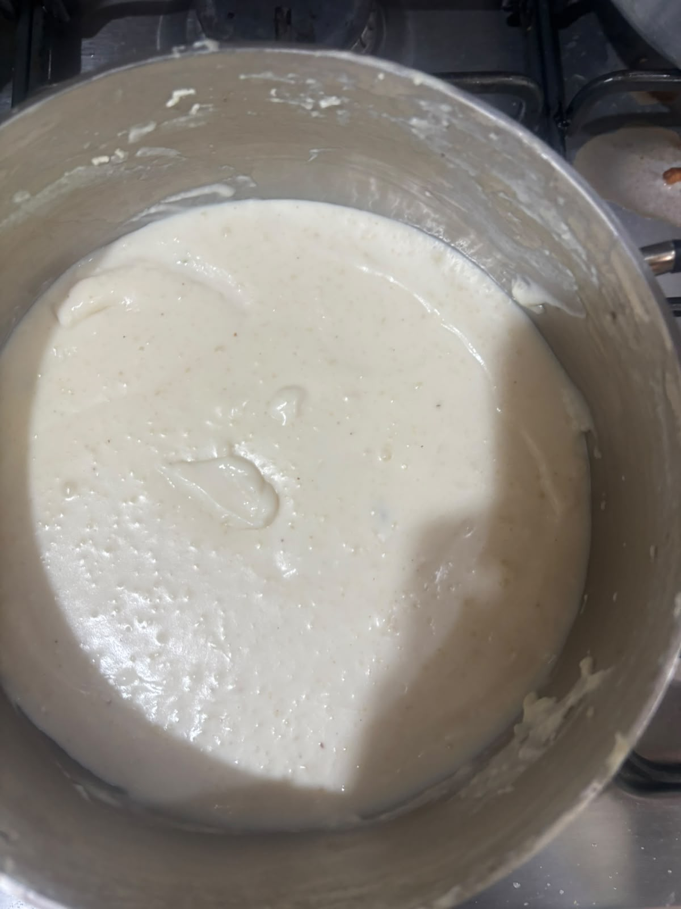

Salsa Bechamel
Una de las bases fundamentales de la cocina clásica. Su textura cremosa permite crear distintas preparaciones y una gran variedad de salsas derivadas.
Familia de salsas madreLa base de muchas preparaciones
La salsa bechamel es una salsa madre de la cocina clásica elaborada principalmente con leche y roux. Se caracteriza por su color blanco, textura suave y consistencia cremosa. Se utiliza en pastas, verduras, gratinados y como base para elaborar otras salsas.
IMAGEN PRINCIPAL DE LA SALSA BECHAMEL
Coloca aquí una fotografía de la salsa terminada.¿Cómo identificarla?
- Tiene un color blanco o ligeramente marfil.
- Su textura debe ser cremosa y uniforme.
- Se elabora con leche y roux.
- Puede utilizarse como base para otras salsas.
- Se emplea en preparaciones gratinadas y cremosas.
TEXTURA DE LA BECHAMEL
Espacio para una fotografía de su consistencia.El roux en la bechamel
El roux es una mezcla de harina y materia grasa, generalmente mantequilla, que se cocina y se utiliza para espesar la leche y obtener la consistencia característica de la bechamel.
ELABORACIÓN DEL ROUX
Espacio para fotografía de la técnica.Tipos de roux
ROUX BLANCO
FotografíaROUX RUBIO
FotografíaROUX OSCURO
FotografíaSalsas derivadas de la bechamel
A partir de esta salsa madre se pueden elaborar diferentes preparaciones con ingredientes adicionales.
Salsa Mornay
La salsa Mornay es una preparación derivada de la bechamel que se enriquece con queso, especialmente parmesano o Gruyère. Se caracteriza por su sabor intenso y su consistencia cremosa.
IMAGEN DE LA SALSA MORNAY
Espacio para fotografía de la salsa terminada.Ingredientes
| Ingrediente | Unidad | Cantidad |
|---|---|---|
| Leche | ml | 500 |
| Mantequilla | g | 15 |
| Cebolla | Pieza | 1/2 |
| Laurel | Pieza | 1 |
| Clavo | Pieza | 2 |
| Pimienta | Pieza | 1 |
| Crema | ml | 200 |
| Huevo | Pieza | 3 |
| Harina | g | 15 |
| Queso parmesano | g | 50 |
Mise en place
- Elaborar un roux.
- Preparar un oignon piqué.
- Separar las yemas de las claras de los huevos.
- Medir la leche y la crema.
- Preparar el queso parmesano.
MISE EN PLACE DE SALSA MORNAY
Espacio para fotografía de los ingredientes.Procedimiento
-
Infusionar la leche
Hervir la leche con el oignon piqué para aromatizarla.
-
Preparar las yemas
En un bowl colocar las yemas de huevo y la crema.
-
Temperar
Cuando la leche haya hervido, agregar poco a poco una parte a la mezcla de crema y yemas, batiendo constantemente.
-
Regresar al fuego
Incorporar la mezcla temperada nuevamente a la cacerola y cocinar a fuego suave, removiendo constantemente.
-
Agregar el queso
Incorporar el queso parmesano y mezclar hasta obtener una preparación homogénea.
-
Sazonar
Añadir sal y bastante pimienta negra recién molida, de molienda gruesa.
-
Rectificar consistencia
Si hace falta consistencia, agregar un poco del roux preparado previamente y mezclar hasta integrar.

PROCESO
FotografíaRESULTADO FINAL
FotografíaSalsa Mornay
Salsa cremosa elaborada a partir de bechamel, enriquecida con yemas, crema y queso Gruyère.
Lo que vamos a necesitar
| Ingrediente | Unidad | Cantidad |
|---|---|---|
| Salsa bechamel | L | 0.500 |
| Huevo | pza | 2 |
| Queso Gruyère | kg | 0.060 |
| Sal de cocina | kg | 0.005 |
| Pimienta blanca molida | kg | 0.0003 |
| Nuez moscada | kg | 0.002 |
| Pimienta de cayena | kg | 0.002 |
| Crema Lyncott | L | 0.040 |
Preparación previa
- Separar las yemas de las claras.
- Rallar medianamente el queso Gruyère.
- Medir y tener listos los ingredientes.
Elaboración
Preparar la mezcla de yemas
Colocar las yemas en un bowl junto con la crema Lyncott y mezclar.
Temperar
Incorporar poco a poco la salsa bechamel caliente a la mezcla de yemas y crema, moviendo constantemente para igualar las temperaturas.
Fundir el queso
Regresar la mezcla al fuego suave. Incorporar el queso Gruyère rallado y mezclar hasta que se funda.
Sazonar y terminar
Agregar sal, pimienta blanca, nuez moscada y cayena. Colar si es necesario y retirar del fuego.
Nota importante
No dejar que la salsa llegue a hervor. Mantener el fuego suave para evitar que las yemas se coagulen y la preparación pierda su textura cremosa.